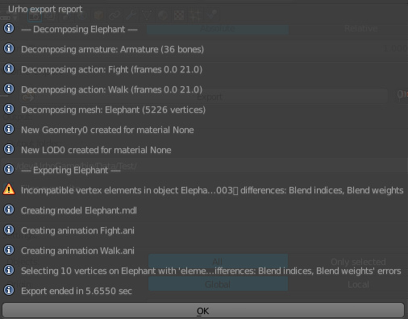
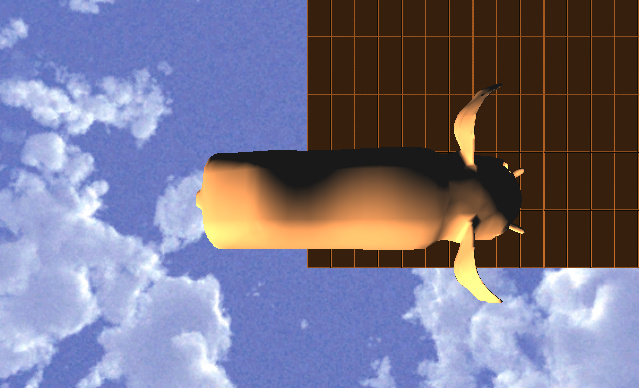
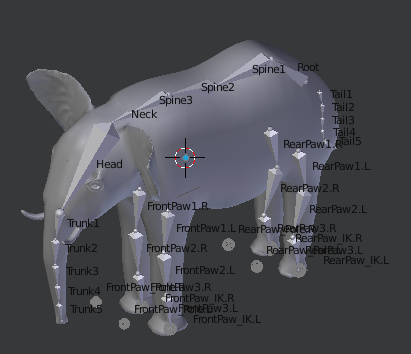

I’ve created a simple model and rigged it and created 2 animations. In blender animations work well. When exporting through
Urho exporter
plugin this message pops up.

In urho I’m creating
AnimationController
like this:
void Character::Start() {
animation_ = node_->CreateComponent<AnimationController>();
// animation_->SetTime("Test/Walk.ani", 0.0f);
animation_->SetWeight("Test/Walk.ani", 1.0f);
animation_->SetLooped("Test/Walk.ani", true);
animation_->PlayExclusive("Test/Walk.ani", 0, false, 0.2f);
}
After start it logs a lot of such warnings:
[Tue May 1 19:38:56 2018] WARNING: Node Trunk5 not found for node animation Test/Walk.ani
[Tue May 1 19:38:56 2018] WARNING: Node Trunk4 not found for node animation Test/Walk.ani
[Tue May 1 19:38:56 2018] WARNING: Node Trunk3 not found for node animation Test/Walk.ani
[Tue May 1 19:38:56 2018] WARNING: Node Trunk2 not found for node animation Test/Walk.ani
… and other bones excluding IKs, Poles, etc …
Of course animation is not working in game, but model is ok

Here is how my model looks in blender

It has multiple root bones. Rear paws parented to
Root
bone and front paws parented to
Spine3
I tried to export model with one bone (Cube) and it worked well in Urho3d.
Is the problem because of multiple root bones?
I may be exported my object from blender wrong ( https://github.com/reattiva/Urho3D-Blender/issues/84 )